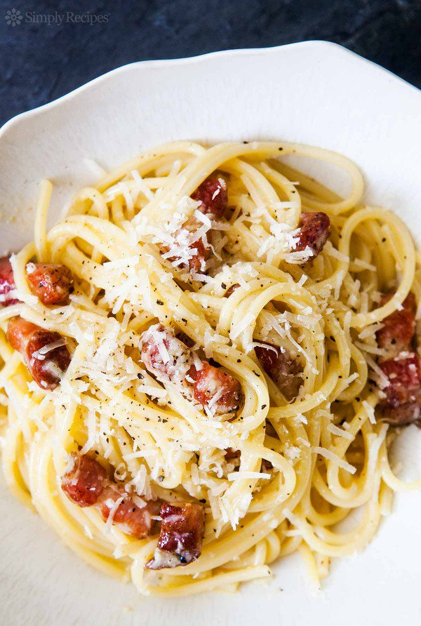

Alina Gorodetskaja
🌠Alina Gorodetskaja🌠
This is recipe - Spaghetti Pasta Carbonara

Salt
2 large eggs and 2 large yolks, room temperature
1 ounce (about 1/3 packed cup) grated pecorino Romano, plus additional for serving
1 ounce (about 1/3 packed cup) grated Parmesan
Coarsely ground black pepper
1 tablespoon olive oil
3 ½ ounces of slab guanciale (see recipe), pancetta or bacon, sliced into pieces about 1/4 inch thick by 1/3 inch square
12 ounces spaghetti (about 3/4 box)
Method
1) Boil the spaghetti in salted water until it is al dente. Drain and set aside.
2) Beat the eggs. Add the black pepper and cheese to the beaten eggs. Set aside. Add the cream to this mixture, if desired, for a creamier dish.
3) Put the oil in a saucepan with the pancetta, and saute for 5 minutes. Add the spaghetti into the pan and saute for another 3 minutes.
4) Turn off the flame (this is important) and add the egg and cheese mixture to the pasta and mix.
5) Serve with additional Pecorino Romano on top.